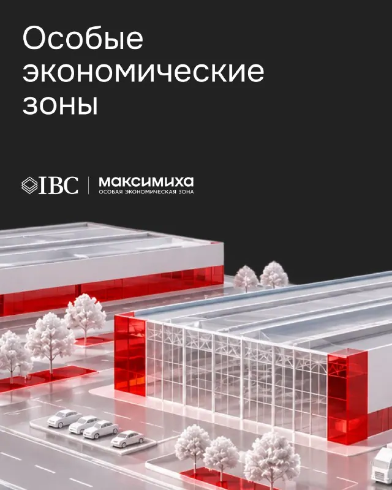

🔖 IBC Real Estate и ОЭЗ «Максимиха» Наша команда подготовила новый совместный отчет об особых экономических зонах Московской области . Согласно результатам исследования, размещение в ОЭЗ дает бизнесу три основных преимущества: 🔴 снижение налоговой нагрузки и затрат на запуск проекта 🔴 доступ к комплексной инженерной…

Альбом · 6